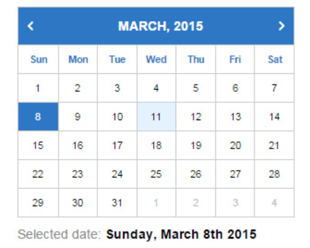

<!--
  Generated template for the CalendarioPage page.

  See http://ionicframework.com/docs/components/#navigation for more info on
  Ionic pages and navigation.
-->
<ion-header>

  <ion-navbar>
    <ion-title>calendario</ion-title>
  </ion-navbar>

</ion-header>


<ion-content padding>
    <ion-card>
                      
    </ion-card>
    <ion-list>        
      
      <ion-item>
        <ion-label floating>Tarea 1</ion-label>
        <ion-input type="text"></ion-input>
      </ion-item>      
      <ion-item>
          <ion-label floating>Tarea 2</ion-label>
          <ion-input type="text"></ion-input>
      </ion-item>
      <ion-item>
          <ion-label floating>Tarea 3</ion-label>
          <ion-input type="text"></ion-input>
      </ion-item>      
    </ion-list>
</ion-content>
